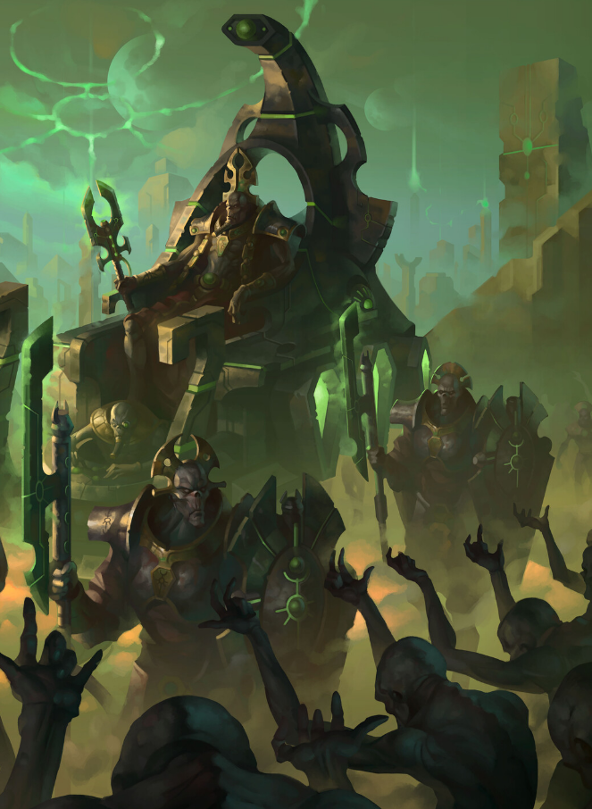

Dossier xenos 949.M41
Les Nécrons ne sont pas nés machines. Ils furent autrefois une espèce vivante, connue sous le nom de Nécrontyrs. Fragiles, mortels, condamnés à des vies brèves sous un soleil cruel, ils développèrent une obsession pour la durée, la survie et la domination.
Leur empire s’étendit rapidement, mais leur faiblesse biologique limita leur expansion. Là où d’autres espèces prospéraient, eux déclinaient. Leur technologie était avancée, mais leur corps restait leur plus grande prison.

LES PREMIERS ÂGES
C’est dans cette frustration qu’ils rencontrèrent les C’Tan. Des entités cosmiques, anciennes, affamées, capables d’interagir avec la matière lorsqu’on leur offrait une forme.
Les C’Tan proposèrent une solution. L’immortalité.
Le prix fut caché. Ou ignoré.
La biotransférence transforma les Nécrontyrs. Leurs corps furent détruits. Leurs consciences transférées dans des enveloppes de nécroderme. Leurs âmes furent consumées.
LA RUPTURE
Ce qui émergea de ce processus n’était plus une civilisation. C’était une armée immortelle, vidée de son essence.
Sous le contrôle des C’Tan, les Nécrons menèrent une guerre à une échelle galactique. Ils affrontèrent des puissances anciennes, remodelèrent des systèmes entiers et laissèrent derrière eux des mondes dévastés.
Mais même dans cet état, une prise de conscience émergea. Les C’Tan n’étaient pas des sauveurs. Ils étaient des prédateurs.
Les Nécrons se retournèrent contre eux. Dans un conflit d’une violence inimaginable, ils parvinrent à briser ces entités. Non pas à les détruire, mais à les fragmenter.
L’HÉRITAGE ACTUEL
Après cette guerre, les Nécrons ne régnèrent pas. Ils s’endormirent.
Les mondes-tombes furent scellés. Les dynasties placées en stase. Une attente calculée, destinée à survivre au passage du temps et à l’effondrement des autres civilisations.
Des millions d’années plus tard, ils se réveillent.
Pas tous. Pas en même temps. Mais suffisamment pour que leur présence soit à nouveau ressentie.
Leurs objectifs varient. Restaurer leur empire. Reconquérir leurs territoires. Éliminer les espèces jugées inférieures.
Mais une chose demeure constante. Ils n’ont pas oublié ce qu’ils étaient. Et ils n’ont jamais accepté ce qu’ils sont devenus.
Il faut comprendre ceci. Les Nécrons ne sont pas une nouvelle menace. Ils sont une ancienne. Revenant dans une galaxie qui n’est plus la leur, mais qu’ils considèrent encore comme acquise.
Fin de l’extrait. Toute activité nécron doit être considérée comme résurgence d’une puissance pré-impériale majeure.